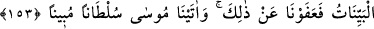
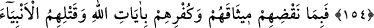
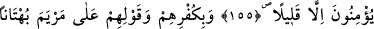
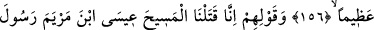
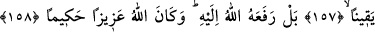
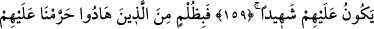
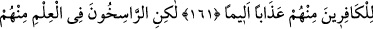
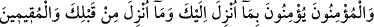
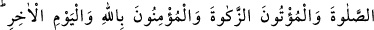
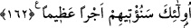

YAHÛDÎLER VE İŞLEDİKLERİ
CÜRÜMLER
153- Ehl-i kitap senden, kendilerine gökten bir kitap indirmeni istiyor. Onlar
Mûsâ’dan, bunun daha büyüğünü istemişler de, “Bize Allah’ı apaçık göster”
demişlerdi. Zulümleri sebebiyle hemen onları yıldırım çarptı. Bilâhare kendilerine